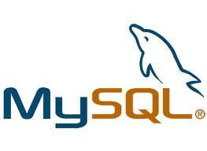
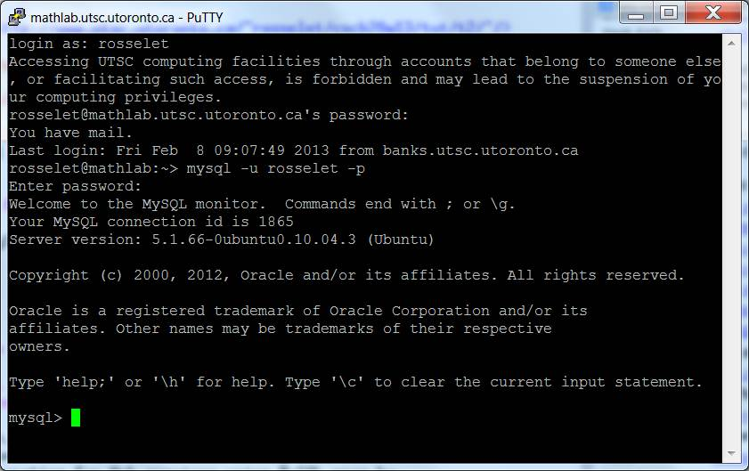

Hands-on labs
The labs will provide you with opportunities to learn about course technologies by working with them on small sample tasks.
You may elect to work with a partner, or on your own in any of the labs.
No marks are assigned for lab participation, but you are strongly encouraged to attend to take advantage of the chance to ask questions as you learn your way around the various languages and technologies covered in B20.
Intro to mySQL
MySQL DB access on cmslab.utsc server
MySQL is a free, open-source relational database, which also happens to be one of the most widely used databases. A common configuration for Web apps or services using MySQL goes by the acronym LAMP: Linux OS, Apache Web server, MySQL DB, PHP server-side scripting; we will use the LAMP configuration on cmslab.
Begin by logging into your account on the cmslab.utsc.utoronto.ca server using the Putty command -> cmslab, which should be listed under the Start menu, "remote connections". 
Each person enrolled in B20 has their own personal mySQL DB on the cmslab.utsc.utoronto.ca server. Try logging in to your MySQL database instance on cmslab, using your UTORid credentials and the following syntax:
mysql -u username -pThe system will prompt you for your password which is just your utorid. Once logged in, you'll see a command-line interface that looks like the adjacent screenshot. Try logging out by typing cntl-d or
exit
One of the nice features of the mysql command is that you can run it from any server on the Internet with mysql installed (e.g. a home computer), and you can tell it to use your database on the cmslab server using syntax:
mysql -h cmslab.utsc.utoronto.ca -u username -p
At this point you have a database, but it is empty - it has no tables (more about the structure of databases and tables in class later). Let's remedy this by setting up a few tables, using pre-created database-dump files.
Begin by copying a copy of the universities.sql database dump to your own cmslab directory (note the "." at the end of the line):
cp /courses/courses/cscb20w17/bretsche/tutorials/universities.sql .Open the universities.sql using a command line editor such as
pico, vi or emacs. Ask your TA for help if you don't
know how to use such an editor. Replace bretsche with your own utorid in the following line:
USE cscb20w17_bretscheThis tells line says which database to use. This is your own personal database. You also have access to two shared databases, imdb and imdb_small.
Now insert tables from the universities database from class into your database by running the following command:
mysql -h cmslab.utsc.utoronto.ca -u utorid -p utorid < universities.sql
Now we have a table that we can play with using SQL queries, that is, SQL statements that retrieve selective data from the DB. Log in to your mysql console,
mysql -u username -pand type this command to use your database:
use utoridnow check that you have all the university tables:
show tables;Pick a table and use the command
show columns from my_table;to see the columns in the table.
Let's write some queries. Write queries to:
- Select everything from the teaches table.
- Find the ids of the instructors who teach in the Fall semester and the year 2009.
- Find the names of the instructors who teach in the Fall semester and the year 2009.
- Find the unique names (no duplicates) of the instructors who teach in the Fall semester and the year 2009.
- Find the unique names (no duplicates) of the instructors who teach in the Fall semester and the year 2009 and make more than $80000.
- Find pairs of courses that have the same pre-requisites.
- Return the number of courses in the Biology department.
- Find the instructor names and the titles of the courses they teach.
University Tables